Tools for people who build houses.
A housewright is someone who builds houses. We make the software for them: a construction calculator that does exact feet-and-inches math, a job-management app that lives on your own computer, and a companion for the crew's phones. Built by a builder.
That line under the headline is its real width on your screen, to the sixteenth. Resize the window.
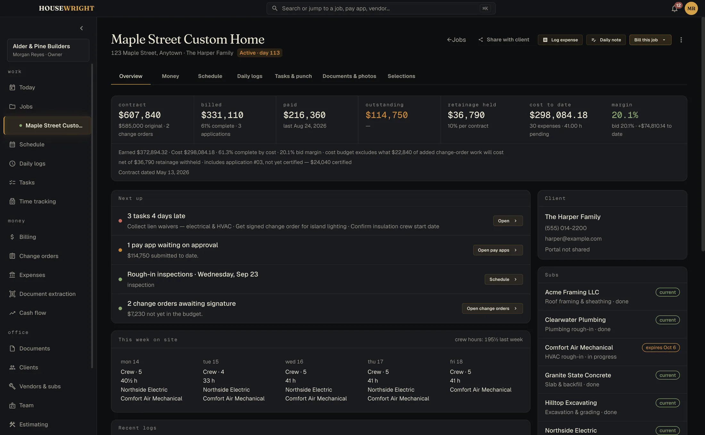
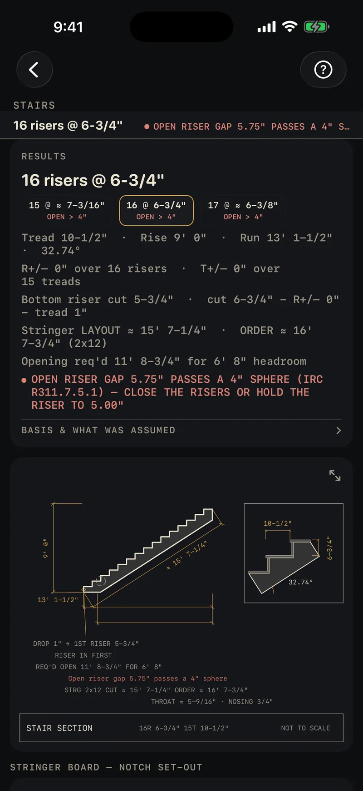
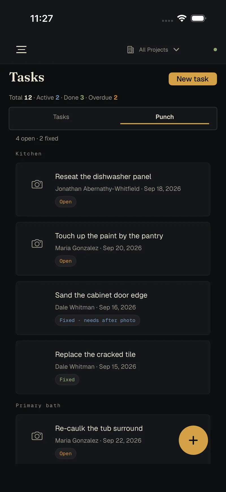
The construction calculator, exact to the sixty-fourth.
Type 4' 3-3/4" + 5' 6-3/16" and get 9' 9-15/16", the exact answer and never a rounded decimal. When a result can't land on your precision the app says ≈ and doesn't pretend. People cut lumber from these numbers.
Your precision
1/2″ down to 1/64″. Parentheses when the job needs them, memory keys, diagonals and equal parts a key away.
Fix one number
Tap any term in the calculation and retype just that one. The rest stands.
Say it, or shoot it
Spoken measurements are recognised on the phone. A Bluetooth Bosch laser lands its reading as an exact fraction.
Three calculations from the app's own demo script, replayed key by key.
This sheet, as it sits on your screen. It redraws every time you change a number in the app.
The drawing, with the code check on it.
Enter a nine-foot rise and Calc lays out the stringer, dimensions it to convention, and flags the open-riser rule the stair fails, in red, on the drawing, citing the IRC section.
31 of the 34 calculators draw what they calculate, live as you type. Every one exports a cut sheet: drawing, inputs and materials on one page.
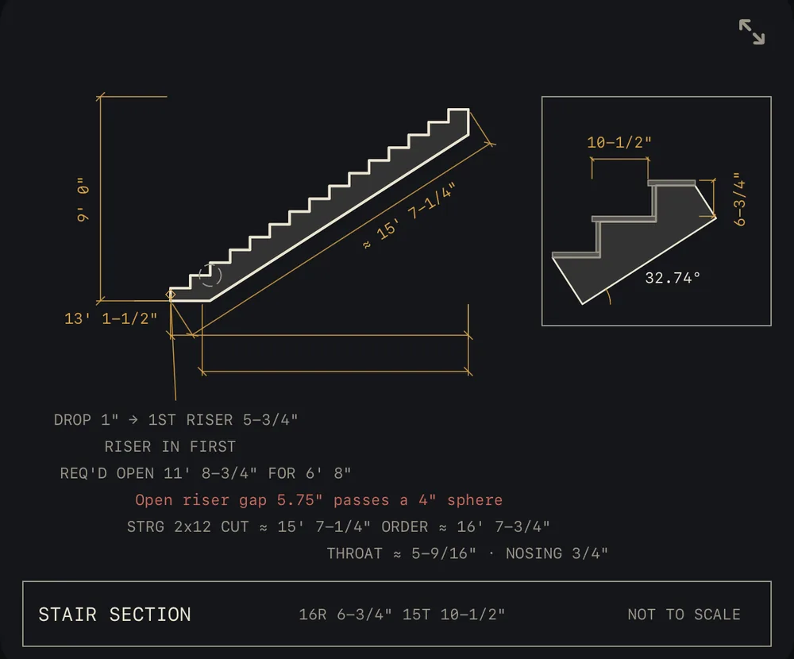
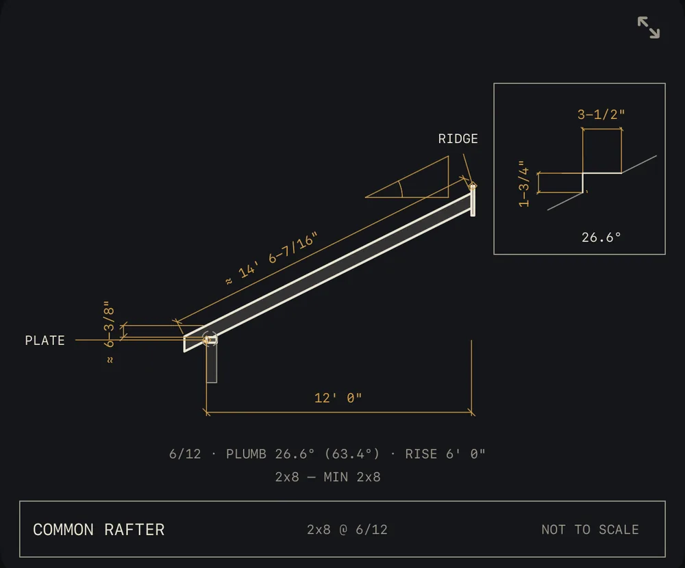
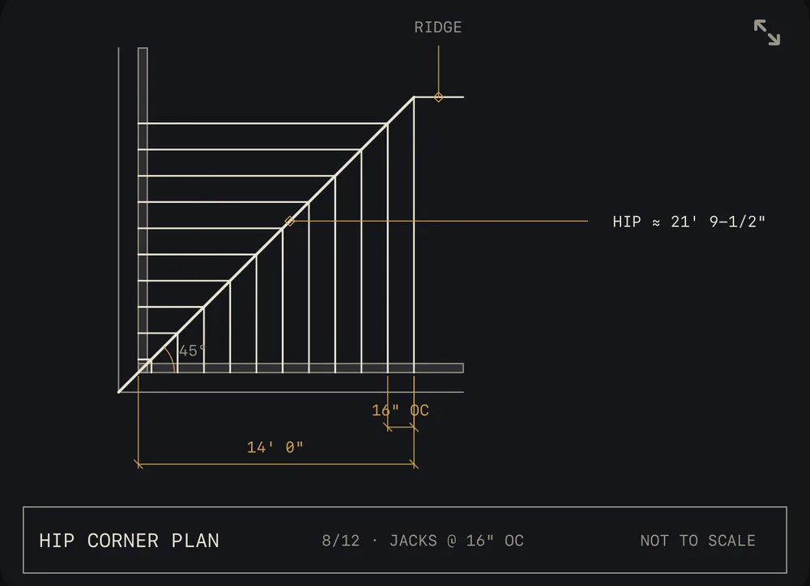


Price it. Build it.
Bill it. Own it.
Job management for residential general contractors, the shop running a handful of remodels, additions and custom homes at once. It runs on your Mac or PC, keeps working with no internet, and keeps your numbers in one file on your own machine.
Price it
Build the estimate from your own materials and crew rates, then send a proposal the client signs from a link. An approved estimate becomes the budget and the schedule of values.
- Estimates and proposals, signed without a third-party service
- Good, better, best pricing from your own catalog
- Approved estimates roll straight into the budget
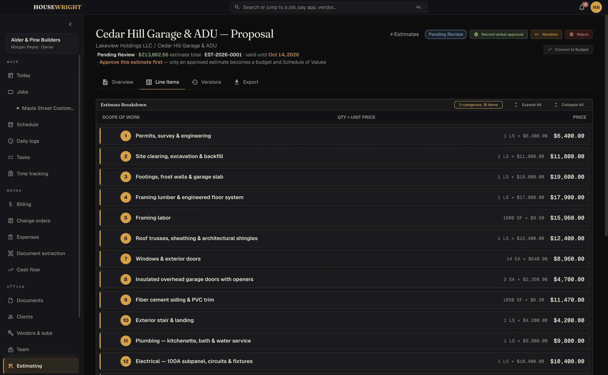
Build it
One screen says what needs you today. The schedule, the punch list, the daily log and the crew's hours all hang off the job.
- Gantt schedule per job and across every job
- Daily logs with weather, crew count and work performed
- Tasks, punch and time, straight from the crew's phones
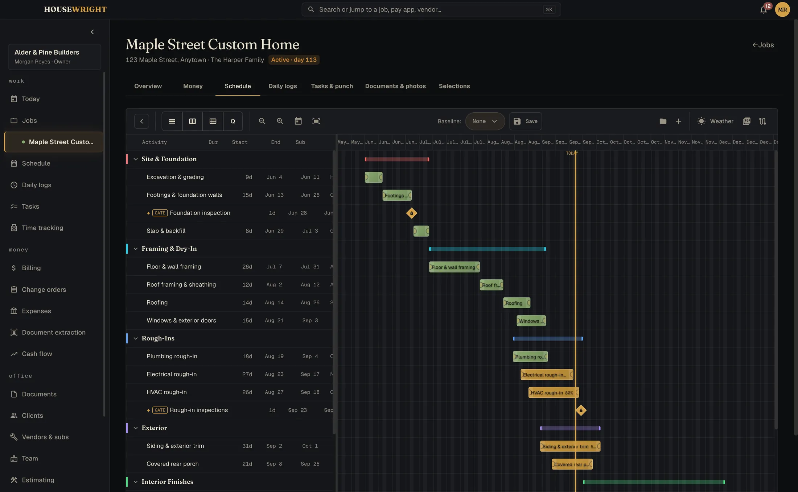
Bill it
Built around how money moves on a job. The schedule of values, the application for payment, retainage, and change orders that carry through to the contract sum. If a sheet doesn't foot, it tells you by how much.
- Schedule of values and continuation sheet, architect-ready
- Applications for payment with retainage and lien waivers
- Change orders that cascade into the budget
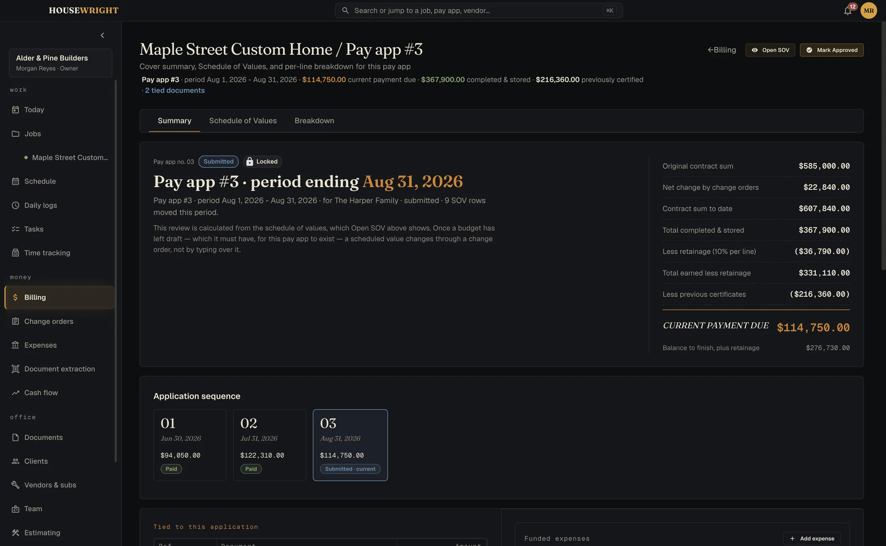
Own it
Your data has a street address: yours. One file on your own computer, backed up on a schedule, readable when the internet isn't.
- Local-first, no cloud account holding your margins
- Automatic backups, before every update too
- Reports for job cost, work in progress and cash flow
The field runs on iPhone. The books stay on your desk.
The crew clocks in, files the daily log, shoots the punch list and opens the current sheet. The office sees it in Housewright Desktop. Pair a phone by scanning a code; after that it works whether or not there's signal.
No signal, no problem
Everything is saved on the phone first and sent when it can be.
The crew never sees the money
Field roles don't get wages, costs, budgets or profit. The office decides.
Stored at each end, sealed in between
Your book lives on your computer and on the phones, not on our servers. Every change is encrypted on the device before it leaves, with a key only your devices hold, so the relay in the middle can't read a word of it. How sync works
Sync is an optional service
The relay is a server we run, so connecting phones to the desk will be a small monthly add-on for the shops that want it. The desktop app works in full without it.
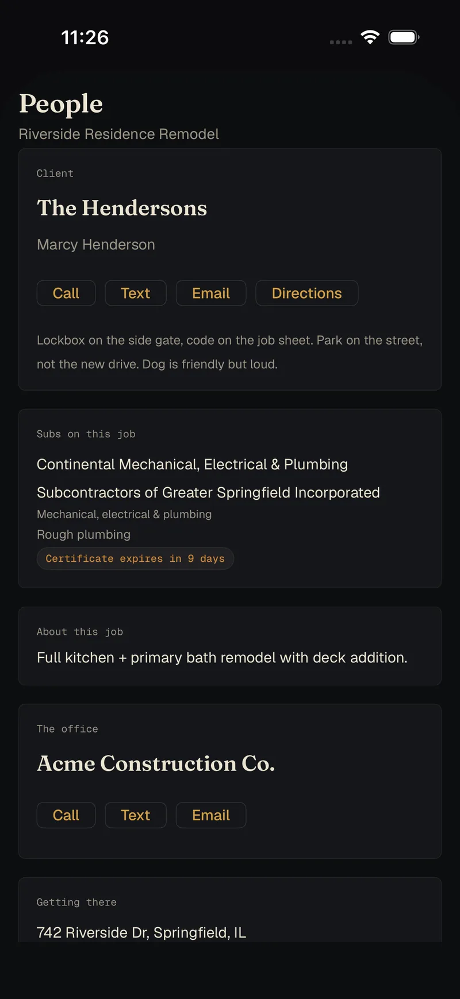
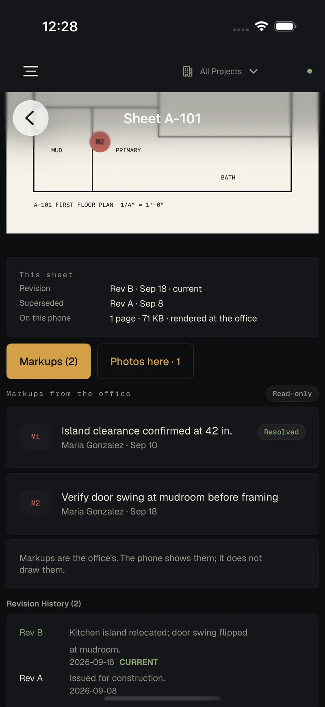
One email when each one ships.
Calc is first, then Desktop and the Companion. We'll confirm you're on the list, then write when there is something you can install. No newsletter.